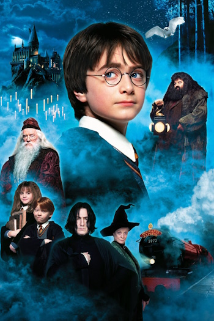
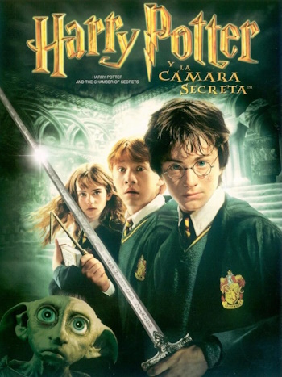

🍿Harry Potter y la Piedra Filosofal (2001)
|  |
Harry descubre que es un mago y comienza su primer año en Hogwarts, donde enfrenta los primeros peligros del mundo mágico. |
🍿Harry Potter y la Cámara Secreta (2002)
|  |
Una serie de ataques petrifican a estudiantes en Hogwarts, y Harry debe descubrir el misterio detrás de la Cámara Secreta. |
🍿Harry Potter y el Prisionero de Azkaban (2004)
Un peligroso prisionero escapa de Azkaban y Harry se entera de verdades ocultas sobre su pasado.
🍿Harry Potter y el Cáliz de Fuego (2005)
Harry es misteriosamente inscrito en un peligroso torneo entre escuelas de magia y enfrenta retos mortales.
🍿Harry Potter y la Orden del Fénix (2007)
El Ministerio niega el regreso de Voldemort, mientras Harry forma un grupo secreto para entrenarse y luchar.
🍿Harry Potter y el Misterio del Príncipe (2009)
Dumbledore prepara a Harry para enfrentar a Voldemort mientras descubren secretos de su pasado.
🍿Harry Potter y las Reliquias de la Muerte – Parte 1 (2010)
Harry, Ron y Hermione escapan y buscan destruir los horrocruxes de Voldemort sin la protección de Hogwarts.
🍿Harry Potter y las Reliquias de la Muerte – Parte 2 (2011)
La batalla final por Hogwarts y el destino del mundo mágico se decide mientras Harry se enfrenta a Voldemort.